Computing highly accurate mass transfer at rising bubbles
Contents

This work is licensed under a Creative Commons Attribution 4.0 International License.
Computing highly accurate mass transfer at rising bubbles#
In this notebook, we cover the following topics:
The high Schmidt number problem
Decoupling two-phase flow and mass transfer
Two-phase flow simulation of a single rising bubble
Data processing and visualization
Model creation
Rise velocity
Surface velocity
Bubble radius
Model export
Single-phase flow simulation with mass transfer
The high Schmidt number problem#
Decoupling two-phase flow and mass transfer#
Data processing and visualization#
from typing import List, Tuple
from glob import glob
from os.path import isdir, join
from copy import deepcopy
import matplotlib.pyplot as plt
import torch as pt
import numpy as np
from pandas import DataFrame, read_csv, to_numeric
from lecture_utils import train_model, create_simple_network
# increase plot resolution
plt.rcParams["figure.dpi"] = 160
# dataset directory
data = "../datasets/ellipsoidal_bubble"
# set default dtype to double precision
pt.set_default_dtype(pt.float64)
# make results reproducible
pt.manual_seed(0)
# create output directory
output = "output"
!mkdir -p $output
def load_logfile(path: str) -> DataFrame:
columns = ["t", "vol", "x", "y", "z", "ux", "uy", "uz", "area"]
log = read_csv(path, sep="\s+", header=None, names=columns, on_bad_lines="skip").dropna()
log = log[to_numeric(log.t, errors="coerce").isnull() == False].reset_index(drop=True)
return log.apply(to_numeric)
log = load_logfile(join(data, "log.solver"))
log.head()
| t | vol | x | y | z | ux | uy | uz | area | |
|---|---|---|---|---|---|---|---|---|---|
| 0 | 0.000000 | 0.083315 | 3.500000 | 0.294497 | 0.0 | 0.000000 | 0.000000 | 0.0 | 1.570654 |
| 1 | 0.001045 | 0.083308 | 3.500011 | 0.292478 | 0.0 | 0.002986 | 0.000113 | 0.0 | 1.572102 |
| 2 | 0.002477 | 0.083306 | 3.500008 | 0.292458 | 0.0 | 0.005118 | -0.000109 | 0.0 | 1.571829 |
| 3 | 0.004044 | 0.083307 | 3.500015 | 0.292159 | 0.0 | 0.008566 | -0.000015 | 0.0 | 1.571621 |
| 4 | 0.005663 | 0.083308 | 3.500029 | 0.292319 | 0.0 | 0.011656 | -0.000133 | 0.0 | 1.571783 |
write_times = pt.arange(0.0, 15, 0.15)
xc = pt.zeros_like(write_times)
uxc = pt.zeros_like(write_times)
for i, t in enumerate(write_times):
row = log.iloc[(log.t-t.item()).abs().argsort()[0]]
xc[i] = row.x
uxc[i] = row.ux
plt.plot(log.t, log.x, label="center of mass")
plt.scatter(write_times, xc, s=5, c="C1", label="write times", zorder=5)
plt.legend()
plt.xlabel(r"$\tilde{t}$")
plt.ylabel(r"$\tilde{x}_b$")
plt.savefig(join(output, "bubble_position.svg"), bbox_inches="tight")
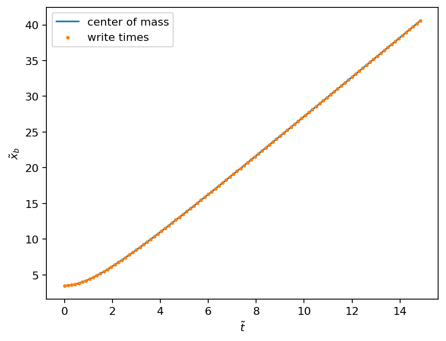
plt.plot(log.t, log.ux, label="terminal velocity")
plt.scatter(write_times, uxc, s=5, c="C1", label="write times", zorder=5)
plt.legend()
plt.xlabel(r"$\tilde{t}$")
plt.ylabel(r"$\tilde{U}_b$")
plt.savefig(join(output, "bubble_speed.svg"), bbox_inches="tight")
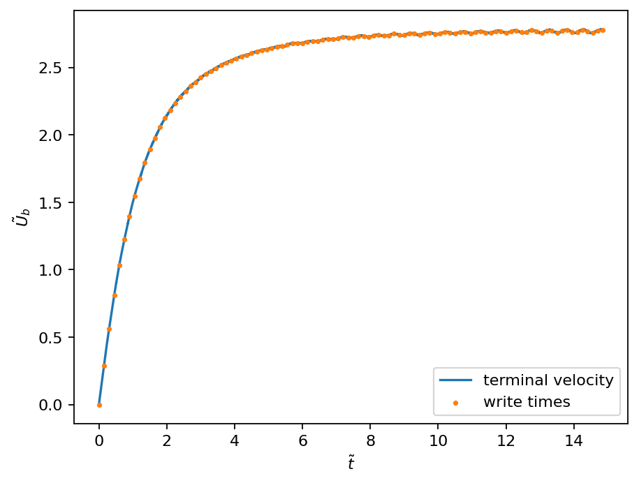
files = glob(join(data, r"plic/*"))
print(files[:2])
iterations = sorted(set([name.split("_")[-2] for name in files]), key=int)
assert len(iterations) == 100, "expected exactly 100 snapshots"
['../datasets/ellipsoidal_bubble/plic/points_000067_n002.txt', '../datasets/ellipsoidal_bubble/plic/points_000024_n003.txt']
def parse_processor_file(path: str) -> pt.Tensor:
with open(path, "r") as f:
lines = [list(map(float, line.strip().split(" "))) for line in f if line.strip()]
return pt.tensor(lines)
parse_processor_file(files[0])[:2]
tensor([[ 2.6985e+01, 0.0000e+00, 9.9568e-01, -4.3208e-03, 2.7620e+00,
0.0000e+00],
[ 2.6986e+01, 7.3242e-03, 9.9568e-01, -4.3208e-03, 2.7636e+00,
-1.1328e-02]])
def load_interface_snapshot(path: str, iteration: int, np: int) -> pt.Tensor:
p_data = []
for p in range(np):
p_data.append(
parse_processor_file(f"{path}points_{iteration:06d}_n{p:03d}.txt")
)
p_data = pt.cat(p_data)
return p_data[p_data[:, -1].abs() < 10]
load_interface_snapshot(join(data, "plic/"), 0, 4).shape
torch.Size([276, 6])
if_data = [load_interface_snapshot(join(data, "plic/"), int(i), 4) for i in iterations]
for i, (xc_i, ub_i) in enumerate(zip(xc, uxc)):
if_data[i][:, 0] -= xc_i # make position relative
if_data[i][:, 4] -= ub_i # make velocity relative
if_data[i][:, 2:4] /= if_data[i][:, 2:4].norm(dim=-1).unsqueeze(-1)
def convert_to_polar(xy: pt.Tensor) -> pt.Tensor:
rphi = pt.zeros_like(xy)
rphi[:, 0] = xy.norm(dim=1)
rphi[:, 1] = pt.asin(xy[:, 1]/rphi[:, 0])
rphi[xy[:, 0] < 0.0, 1] = np.pi - rphi[xy[:, 0] < 0.0, 1]
return rphi
shape_polar = [convert_to_polar(i[:, :2]) for i in if_data]
fig, (ax1, ax2) = plt.subplots(1, 2, figsize=(7, 4))
for i, (shape_xy, shape_rphi) in enumerate(zip(if_data[::10], shape_polar[::10])):
ax1.scatter(shape_xy[:, 1], shape_xy[:, 0], s=5)
ax2.scatter(shape_rphi[:, 1], shape_rphi[:, 0], s=5)
ax1.set_aspect("equal")
ax1.set_xlabel(r"$\tilde{x}$")
ax1.set_ylabel(r"$\tilde{y}$")
ax2.set_xlabel(r"$\vartheta$")
ax2.set_ylabel(r"$\tilde{r}$")
ax1.set_title("Cartesian coord.")
ax2.set_title("polar coord.")
plt.savefig(join(output, "shape_over_time.svg"), bbox_inches="tight")
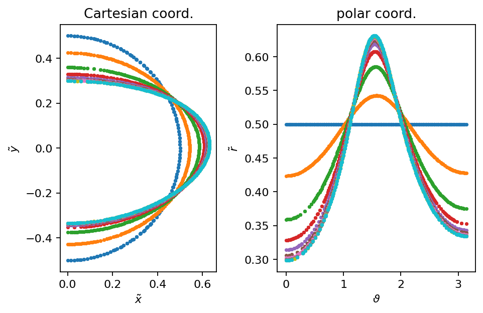
def project_velocity(normal: pt.Tensor, velocity: pt.Tensor):
vn = -(velocity * normal).sum(dim=1)
tangential = pt.zeros_like(normal)
tangential[:, 0] = normal[:, 1]
tangential[:, 1] = -normal[:, 0]
vt = (velocity * tangential).sum(dim=1)
return pt.stack((vn, vt)).T
projected_velocity = [project_velocity(i[:, 2:4], i[:, 4:]) for i in if_data]
fig, (ax1, ax2) = plt.subplots(1, 2, figsize=(7, 4))
for i, (rphi, vel) in enumerate(zip(shape_polar[::10], projected_velocity[::10])):
ax1.scatter(rphi[:, 1], vel[:, 0], s=5)
ax2.scatter(rphi[:, 1], vel[:, 1], s=5)
ax1.set_xlabel(r"$\vartheta$")
ax1.set_ylabel(r"$\tilde{v}_n$")
ax2.set_xlabel(r"$\vartheta$")
ax2.set_ylabel(r"$\tilde{v}_t$")
ax1.set_title("Cartesian coord.")
ax2.set_title("polar coord.")
plt.savefig(join(output, "velocity_projected_over_time.svg"), bbox_inches="tight")
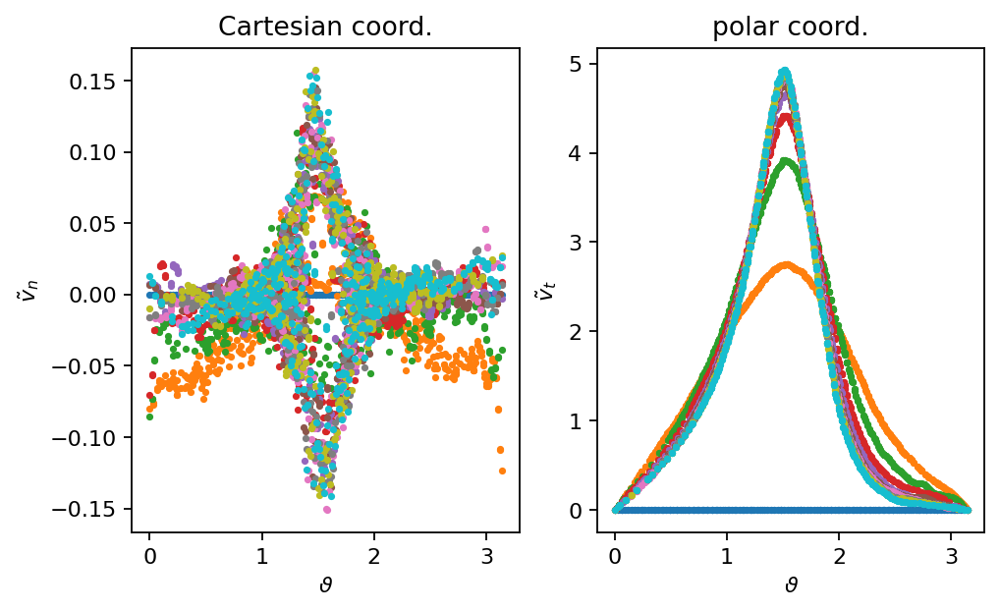
Model creation#
Rise velocity#
rv_max = uxc.max()
rv_min = pt.zeros_like(rv_max)
rv_norm = (uxc - rv_min) / (rv_max - rv_min)
wt_max = write_times.max()
wt_min = pt.zeros_like(wt_max)
wt_norm = (write_times - wt_min) / (wt_max - wt_min)
rv_dataset = pt.utils.data.TensorDataset(wt_norm.unsqueeze(-1), rv_norm.unsqueeze(-1))
def split_and_train(dataset, model, epochs, batch_size=None, lr_min=1.0e-4, lr_max=1.0e-2, train_frac=0.9, patience=20):
n_train = int(len(dataset)*train_frac)
n_val = len(dataset) - n_train
batch_size = n_train if batch_size is None else batch_size
train, val = pt.utils.data.random_split(dataset, (n_train, n_val))
train_loader = pt.utils.data.DataLoader(train, batch_size=batch_size, shuffle=True)
val_loader = pt.utils.data.DataLoader(val, batch_size=len(val))
optimizer = pt.optim.AdamW(model.parameters(), lr=lr_max)
scheduler = pt.optim.lr_scheduler.ReduceLROnPlateau(optimizer=optimizer, mode="min", factor=0.5, patience=patience, min_lr=lr_min)
results = train_model(
model,
pt.nn.MSELoss(),
train_loader, val_loader,
epochs=epochs,
lr_schedule=scheduler,
optimizer=optimizer
)
return model, results
class RVModelNorm(pt.nn.Module):
def __init__(self, n_neurons=100, n_hidden=2, activation=pt.nn.Tanh):
super(RVModelNorm, self).__init__()
self._model = create_simple_network(1, 1, n_neurons, n_hidden, activation)
def forward(self, x):
return self._model(x) * x
best_val_loss = float("inf")
for k in range(5):
pt.manual_seed(k)
model = RVModelNorm()
model, results = split_and_train(rv_dataset, model, 500, 20)
if results["val_loss"].values[-1] < best_val_loss:
best_val_loss = results["val_loss"].values[-1]
print(f"\nBest validation loss decreased to {best_val_loss:2.4e}")
best_rv_model_norm = deepcopy(model)
best_results_rv = deepcopy(results)
Epoch 499/499 - Training loss: 6.135854e-05; Validation loss: 8.702406e-06
Best validation loss decreased to 8.7024e-06
Epoch 499/499 - Training loss: 1.132306e-04; Validation loss: 1.414502e-06
Best validation loss decreased to 1.4145e-06
Epoch 499/499 - Training loss: 6.099338e-05; Validation loss: 1.118540e-04
plt.plot(best_results_rv["epoch"], best_results_rv["train_loss"], label="training")
plt.plot(best_results_rv["epoch"], best_results_rv["val_loss"], label="validation")
plt.xlabel("epoch")
plt.ylabel("MSE")
plt.yscale("log")
plt.legend()
plt.xlim(0, 500)
plt.savefig(join(output, "rv_mse_loss.svg"), bbox_inches="tight")
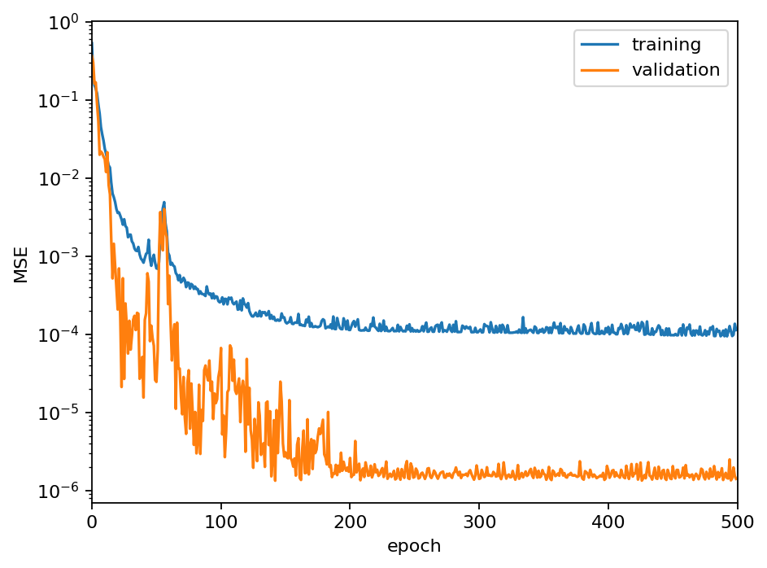
class RVModel(pt.nn.Module):
def __init__(self, rv_model_norm, rv_min, rm_max, t_min, t_max):
super(RVModel, self).__init__()
self._model = rv_model_norm
self._rv_min = rv_min
self._rv_max = rv_max
self._t_min = t_min
self._t_max = t_max
def forward(self, x):
x_norm = (x.unsqueeze(1) - self._t_min) / (self._t_max - self._t_min)
rv_norm = self._model(x_norm)
return (rv_norm * (self._rv_max - self._rv_min) + self._rv_min).squeeze()
rv_model = RVModel(best_rv_model_norm, rv_min, rv_max, wt_min, wt_max)
t_plot = pt.linspace(0.0, 15.0, 100)
rv_pred = rv_model(t_plot).detach()
plt.plot(t_plot, rv_pred, label="prediction")
plt.scatter(write_times, uxc, s=5, c="C1", label="write times", zorder=5)
plt.legend()
plt.xlabel(r"$\tilde{t}$")
plt.ylabel(r"$\tilde{U}_b$")
plt.savefig(join(output, "rv_prediction.svg"), bbox_inches="tight")
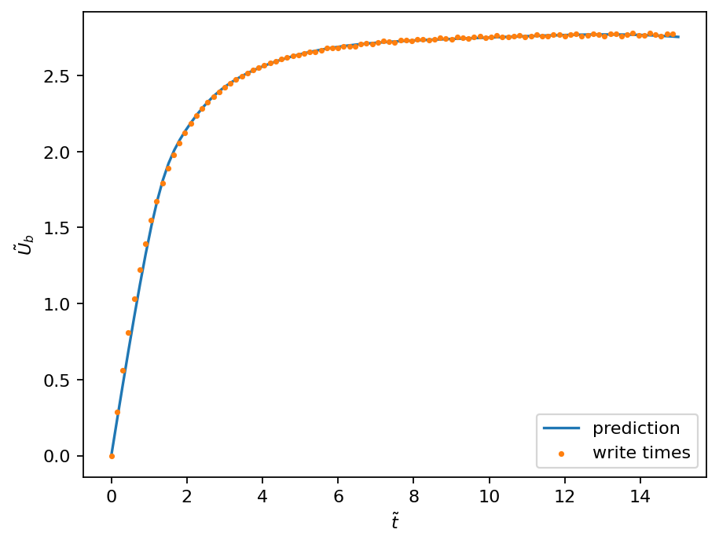
Surface velocity#
phi = pt.linspace(-np.pi/2, 1.5*np.pi, 100)
plt.plot(phi, phi.sin(), label=r"$\mathrm{sin}(\vartheta)$")
plt.plot(phi, phi.cos(), label=r"$\mathrm{cos}(\vartheta)$")
plt.xlabel(r"$\vartheta$")
plt.legend()
plt.axvline(0.0, ls="--", c="k")
plt.axvline(np.pi, ls="--", c="k")
plt.savefig(join(output, "sin_symmetry.svg"), bbox_inches="tight")
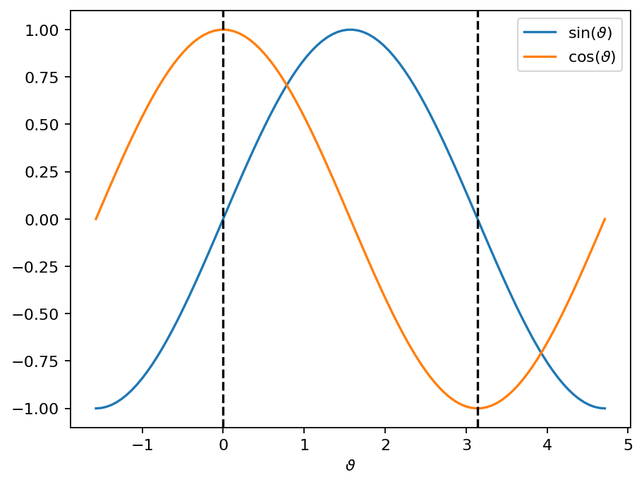
def reshape_surface_data(theta, field, time):
dataset = []
for i in range(len(theta)):
n_points = len(theta[i])
data_i = pt.zeros((n_points, 3))
data_i[:, 0] = theta[i]
data_i[:, 1] = time[i]
data_i[:, 2] = field[i]
dataset.append(data_i)
return pt.cat(dataset, dim=0)
theta = [data[:, 1] for data in shape_polar]
vel = [data[:, 1] for data in projected_velocity]
tv_data = reshape_surface_data(theta, vel, write_times)
tv_max = tv_data[:, 1:].max(dim=0).values
tv_min = pt.zeros_like(tv_max)
tv_norm = pt.zeros_like(tv_data)
tv_norm[:, 0] = tv_data[:, 0]
tv_norm[:, 1:] = (tv_data[:, 1:] - tv_min) / (tv_max - tv_min)
tv_dataset = pt.utils.data.TensorDataset(tv_norm[:, :2], tv_norm[:, 2].unsqueeze(-1))
len(tv_dataset)
47465
class TVVelocityNorm(pt.nn.Module):
def __init__(self, n_neurons=100, n_hidden=5, activation=pt.nn.ReLU):
super(TVVelocityNorm, self).__init__()
self._model_norm = create_simple_network(2, 1, n_neurons, n_hidden, activation)
def forward(self, x):
sin = pt.sin(x[:, 0]).unsqueeze(-1)
x = pt.stack((pt.cos(x[:, 0]), x[:, 1])).T
return self._model_norm(x) * sin * x[:, 1].unsqueeze(-1)
best_val_loss = float("inf")
for k in range(1):
pt.manual_seed(k)
model = TVVelocityNorm()
model, results = split_and_train(tv_dataset, model, 50, 500, patience=1)
if results["val_loss"].values[-1] < best_val_loss:
best_val_loss = results["val_loss"].values[-1]
print(f"\nBest validation loss decreased to {best_val_loss:2.4e}")
best_tv_model_norm = deepcopy(model)
best_results_tv = deepcopy(results)
Epoch 49/49 - Training loss: 1.781350e-05; Validation loss: 1.865229e-05
Best validation loss decreased to 1.8652e-05
plt.plot(best_results_tv["epoch"], best_results_tv["train_loss"], label="training")
plt.plot(best_results_tv["epoch"], best_results_tv["val_loss"], label="validation")
plt.xlabel("epoch")
plt.ylabel("MSE")
plt.yscale("log")
plt.legend()
plt.xlim(0, 50)
plt.savefig(join(output, "tv_mse_loss.svg"), bbox_inches="tight")
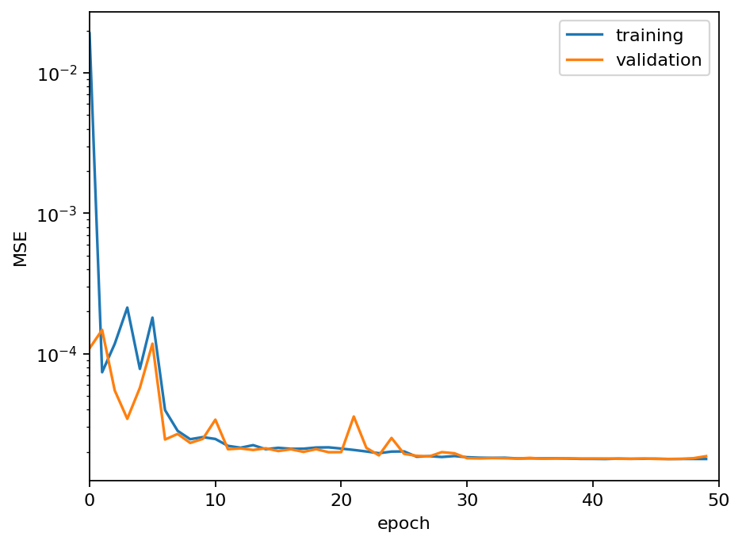
class TVVelocity(pt.nn.Module):
def __init__(self, model_norm, t_min, t_max, tv_min, tv_max):
super(TVVelocity, self).__init__()
self._model = model_norm
self._t_min = t_min
self._t_max = t_max
self._tv_min = tv_min
self._tv_max = tv_max
def forward(self, x):
x_norm = pt.zeros_like(x)
x_norm[:, 0] = x[:, 0]
x_norm[:, 1] = (x[:, 1] - self._t_min) / (self._t_max - self._t_min)
y_norm = self._model(x_norm)
return (y_norm * (self._tv_max - self._tv_min) + self._tv_min).squeeze()
tv_model = TVVelocity(best_tv_model_norm, tv_min[0], tv_max[0], tv_min[1], tv_max[1])
f = pt.zeros(100, 2)
f[:, 0] = pt.linspace(-0.1, np.pi+0.1, 100)
idx = list(range(0, 12, 1))
n_rows = len(idx) / 4 if len(idx) % 4 == 0 else len(idx) / 4 + 1
fig, axarr = plt.subplots(int(n_rows), 4, figsize=(8, n_rows*2), sharex=True, sharey=True)
row, col = 0, 0
for i in idx:
f[:, 1] = write_times[i]
vel_i = tv_model(f).detach()
axarr[row, col].plot(f[:, 0], vel_i, c="C1", label="prediction")
axarr[row, col].scatter(shape_polar[i][::4, 1], projected_velocity[i][::4, 1], marker="x", s=1, c="C0", zorder=5, label="reference")
axarr[row, col].set_title(r"$\tilde{t}=" +r"{:2.2f}$".format(write_times[i]), fontsize=8)
if col == 0 and row == 0: axarr[row, col].legend(loc=0)
col += 1
if col % 4 == 0:
row += 1
col = 0
for ax in axarr[:, 0]:
ax.set_ylabel(r"$\tilde{v}_t$")
for ax in axarr[-1, :]:
ax.set_xlabel(r"$\vartheta$")
plt.savefig(join(output, "vt_prediction.svg"), bbox_inches="tight")
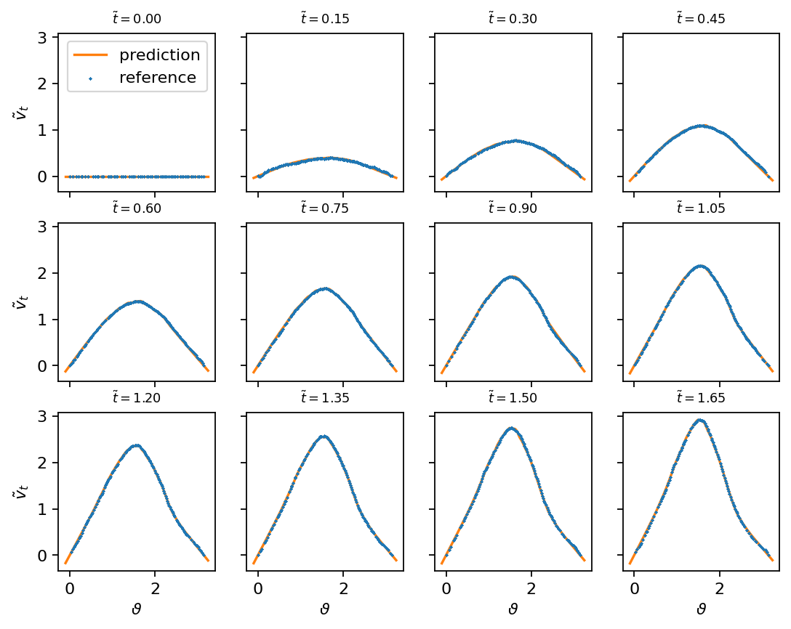
Bubble shape#
theta = [data[:, 1] for data in shape_polar]
rad = [data[:, 0] for data in shape_polar]
rad_data = reshape_surface_data(theta, rad, write_times)
rad_max = rad_data[:, 1:].max(dim=0).values
rad_min = pt.zeros_like(rad_max)
rad_min[1] = 0.5
rad_norm = pt.zeros_like(rad_data)
rad_norm[:, 0] = rad_data[:, 0]
rad_norm[:, 1:] = (rad_data[:, 1:] - rad_min) / (rad_max - rad_min)
rad_dataset = pt.utils.data.TensorDataset(rad_norm[:, :2], rad_norm[:, 2].unsqueeze(-1))
len(rad_dataset)
47465
class RadNorm(pt.nn.Module):
def __init__(self, n_neurons=100, n_hidden=5, activation=pt.nn.ReLU):
super(RadNorm, self).__init__()
self._model_norm = create_simple_network(2, 1, n_neurons, n_hidden, activation)
def forward(self, x):
x = pt.stack((pt.cos(x[:, 0]), x[:, 1])).T
return self._model_norm(x) * x[:, 1].unsqueeze(-1)
best_val_loss = float("inf")
for k in range(1):
pt.manual_seed(k)
model = RadNorm()
model, results = split_and_train(rad_dataset, model, 50, 100, patience=1)
if results["val_loss"].values[-1] < best_val_loss:
best_val_loss = results["val_loss"].values[-1]
print(f"\nBest validation loss decreased to {best_val_loss:2.4e}")
best_rad_model_norm = deepcopy(model)
best_results_rad = deepcopy(results)
Epoch 49/49 - Training loss: 9.303476e-05; Validation loss: 1.038798e-04
Best validation loss decreased to 1.0388e-04
plt.plot(best_results_rad["epoch"], best_results_rad["train_loss"], label="training")
plt.plot(best_results_rad["epoch"], best_results_rad["val_loss"], label="validation")
plt.xlabel("epoch")
plt.ylabel("MSE")
plt.yscale("log")
plt.legend()
plt.xlim(0, 50)
plt.savefig(join(output, "rad_mse_loss.svg"), bbox_inches="tight")
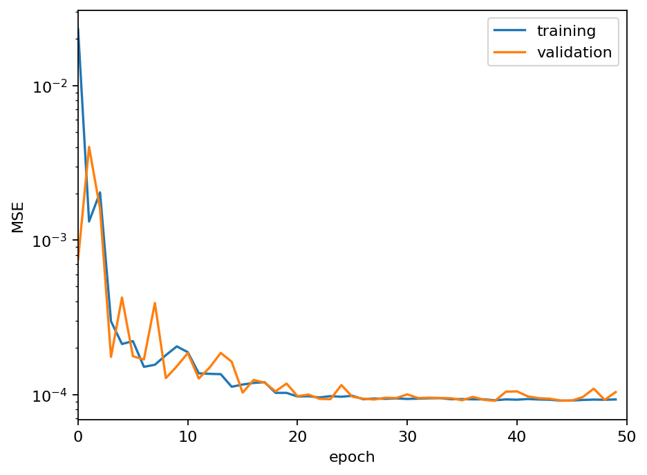
class Rad(pt.nn.Module):
def __init__(self, model_norm, t_min, t_max, rad_min, rad_max):
super(Rad, self).__init__()
self._model = model_norm
self._t_min = t_min
self._t_max = t_max
self._rad_min = rad_min
self._rad_max = rad_max
def forward(self, x):
x_norm = pt.zeros_like(x)
x_norm[:, 0] = x[:, 0]
x_norm[:, 1] = (x[:, 1] - self._t_min) / (self._t_max - self._t_min)
y_norm = self._model(x_norm)
return (y_norm * (self._rad_max - self._rad_min) + self._rad_min).squeeze()
rad_model = Rad(best_rad_model_norm, rad_min[0], rad_max[0], rad_min[1], rad_max[1])
f = pt.zeros(100, 2)
f[:, 0] = pt.linspace(-0.1, np.pi+0.1, 100)
idx = list(range(0, 12, 1))
n_rows = len(idx) / 4 if len(idx) % 4 == 0 else len(idx) / 4 + 1
fig, axarr = plt.subplots(int(n_rows), 4, figsize=(8, n_rows*2), sharex=True, sharey=True)
row, col = 0, 0
for i in idx:
f[:, 1] = write_times[i]
r_i = rad_model(f).detach()
axarr[row, col].plot(f[:, 0], r_i, c="C1", label="prediction")
axarr[row, col].scatter(shape_polar[i][::4, 1], shape_polar[i][::4, 0], marker="x", s=1, c="C0", zorder=5, label="reference")
axarr[row, col].set_title(r"$\tilde{t}=" +r"{:2.2f}$".format(write_times[i]), fontsize=8)
if col == 0 and row == 0: axarr[row, col].legend(loc=0)
col += 1
if col % 4 == 0:
row += 1
col = 0
for ax in axarr[:, 0]:
ax.set_ylabel(r"$\tilde{r}$")
for ax in axarr[-1, :]:
ax.set_xlabel(r"$\vartheta$")
plt.savefig(join(output, "rad_prediction.svg"), bbox_inches="tight")
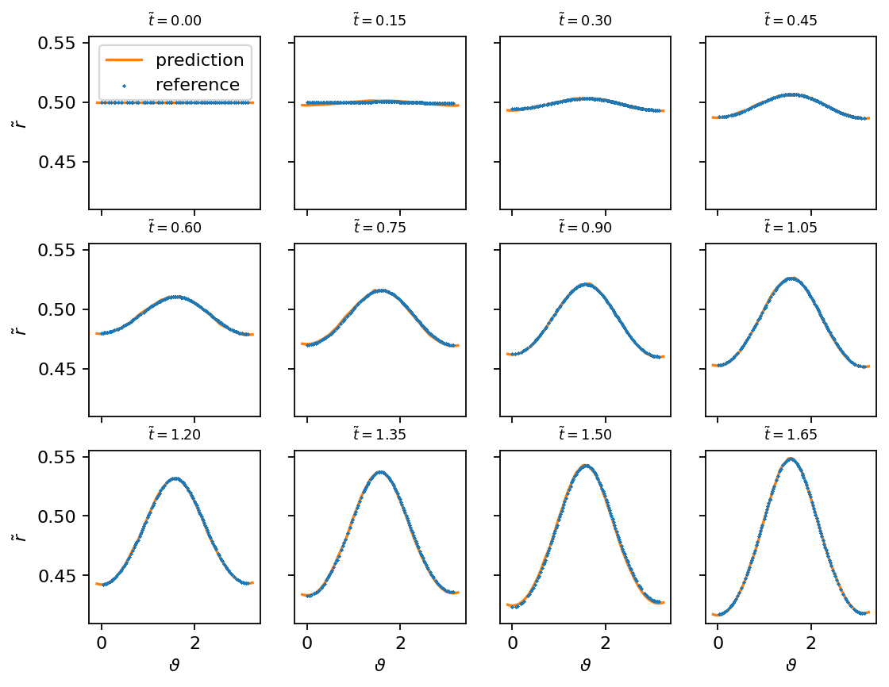
Model export#
def do_computation_0(a, b):
return a + b
comp_trace = pt.jit.trace(do_computation_0, example_inputs=(pt.ones(10), pt.ones(10)))
comp_trace.graph
graph(%a : Double(10, strides=[1], requires_grad=0, device=cpu),
%b : Double(10, strides=[1], requires_grad=0, device=cpu)):
%2 : int = prim::Constant[value=1]() # /tmp/ipykernel_23891/1867394881.py:2:0
%3 : Double(10, strides=[1], requires_grad=0, device=cpu) = aten::add(%a, %b, %2) # /tmp/ipykernel_23891/1867394881.py:2:0
return (%3)
def do_computation_1(a, b, take_abs):
if take_abs:
return a.abs() + b.abs()
else:
return a + b
try:
comp_trace = pt.jit.trace(do_computation_1, example_inputs=(pt.ones(10), pt.ones(10), False))
except Exception as e:
print(e)
Type 'Tuple[Tensor, Tensor, bool]' cannot be traced. Only Tensors and (possibly nested) Lists, Dicts, and Tuples of Tensors can be traced
def do_computation_2(a, b, take_abs=True):
if take_abs:
return a.abs() + b.abs()
else:
return a + b
comp_trace = pt.jit.trace(do_computation_2, example_inputs=(pt.ones(10), pt.ones(10)))
comp_trace.graph
graph(%a : Double(10, strides=[1], requires_grad=0, device=cpu),
%b : Double(10, strides=[1], requires_grad=0, device=cpu)):
%2 : Double(10, strides=[1], requires_grad=0, device=cpu) = aten::abs(%a) # /tmp/ipykernel_23891/2143973957.py:3:0
%3 : Double(10, strides=[1], requires_grad=0, device=cpu) = aten::abs(%b) # /tmp/ipykernel_23891/2143973957.py:3:0
%4 : int = prim::Constant[value=1]() # /tmp/ipykernel_23891/2143973957.py:3:0
%5 : Double(10, strides=[1], requires_grad=0, device=cpu) = aten::add(%2, %3, %4) # /tmp/ipykernel_23891/2143973957.py:3:0
return (%5)
comp_script = pt.jit.script(do_computation_2, example_inputs=(pt.ones(10), pt.ones(10), True))
comp_script.graph
/home/andre/Development/ml-cfd-lecture/ml-cfd/lib/python3.10/site-packages/torch/jit/_script.py:1280: UserWarning: Warning: monkeytype is not installed. Please install https://github.com/Instagram/MonkeyType to enable Profile-Directed Typing in TorchScript. Refer to https://github.com/Instagram/MonkeyType/blob/master/README.rst to install MonkeyType.
warnings.warn("Warning: monkeytype is not installed. Please install https://github.com/Instagram/MonkeyType "
graph(%a.1 : Tensor,
%b.1 : Tensor,
%take_abs.1 : Tensor):
%10 : int = prim::Constant[value=1]()
%5 : bool = aten::Bool(%take_abs.1) # /tmp/ipykernel_23891/2143973957.py:2:7
%24 : Tensor = prim::If(%5) # /tmp/ipykernel_23891/2143973957.py:2:4
block0():
%7 : Tensor = aten::abs(%a.1) # /tmp/ipykernel_23891/2143973957.py:3:15
%9 : Tensor = aten::abs(%b.1) # /tmp/ipykernel_23891/2143973957.py:3:25
%11 : Tensor = aten::add(%7, %9, %10) # /tmp/ipykernel_23891/2143973957.py:3:15
-> (%11)
block1():
%15 : Tensor = aten::add(%a.1, %b.1, %10) # /tmp/ipykernel_23891/2143973957.py:5:15
-> (%15)
return (%24)
with pt.no_grad():
rv_trace = pt.jit.trace(rv_model.eval(), example_inputs=pt.rand(2))
rv_trace.graph
graph(%self.1 : __torch__.RVModel,
%x : Double(2, strides=[1], requires_grad=0, device=cpu)):
%_model : __torch__.RVModelNorm = prim::GetAttr[name="_model"](%self.1)
%39 : int = prim::Constant[value=1]() # /tmp/ipykernel_23891/146180112.py:11:0
%40 : Double(2, 1, strides=[1, 1], requires_grad=0, device=cpu) = aten::unsqueeze(%x, %39) # /tmp/ipykernel_23891/146180112.py:11:0
%41 : Double(requires_grad=0, device=cpu) = prim::Constant[value={0}]() # /tmp/ipykernel_23891/146180112.py:11:0
%42 : int = prim::Constant[value=1]() # /tmp/ipykernel_23891/146180112.py:11:0
%43 : Double(2, 1, strides=[1, 1], requires_grad=0, device=cpu) = aten::sub(%40, %41, %42) # /tmp/ipykernel_23891/146180112.py:11:0
%44 : Double(requires_grad=0, device=cpu) = prim::Constant[value={14.85}]() # /tmp/ipykernel_23891/146180112.py:11:0
%45 : int = prim::Constant[value=1]() # /tmp/ipykernel_23891/146180112.py:11:0
%46 : Double(requires_grad=0, device=cpu) = aten::sub(%44, %41, %45) # /tmp/ipykernel_23891/146180112.py:11:0
%input.1 : Double(2, 1, strides=[1, 1], requires_grad=0, device=cpu) = aten::div(%43, %46) # /tmp/ipykernel_23891/146180112.py:11:0
%99 : Tensor = prim::CallMethod[name="forward"](%_model, %input.1)
%56 : Double(requires_grad=0, device=cpu) = prim::Constant[value={2.77891}]() # /tmp/ipykernel_23891/146180112.py:11:0
%57 : Double(requires_grad=0, device=cpu) = prim::Constant[value={0}]() # /tmp/ipykernel_23891/146180112.py:11:0
%58 : int = prim::Constant[value=1]() # /tmp/ipykernel_23891/146180112.py:11:0
%59 : Double(requires_grad=0, device=cpu) = aten::sub(%56, %57, %58) # /tmp/ipykernel_23891/146180112.py:11:0
%60 : Double(2, 1, strides=[1, 1], requires_grad=0, device=cpu) = aten::mul(%99, %59) # /tmp/ipykernel_23891/146180112.py:11:0
%61 : int = prim::Constant[value=1]() # /tmp/ipykernel_23891/146180112.py:12:0
%62 : Double(2, 1, strides=[1, 1], requires_grad=0, device=cpu) = aten::add(%60, %57, %61) # /tmp/ipykernel_23891/146180112.py:12:0
%63 : Double(2, strides=[1], requires_grad=0, device=cpu) = aten::squeeze(%62) # /tmp/ipykernel_23891/146180112.py:12:0
return (%63)
res = rv_trace(pt.linspace(0.0, 5.0, 10, requires_grad=False)).detach()
res
tensor([0.0000, 0.8395, 1.5677, 2.0093, 2.2283, 2.3800, 2.4792, 2.5478, 2.5995,
2.6395])
rv_trace.save(join(output, "rv_model.pt"))
tv_trace = pt.jit.trace(tv_model, example_inputs=pt.rand((3, 2)))
tv_trace.save(join(output, "tv_model.pt"))
rad_trace = pt.jit.trace(rad_model, example_inputs=pt.rand((3, 2)))
rad_trace.save(join(output, "rad_model.pt"))